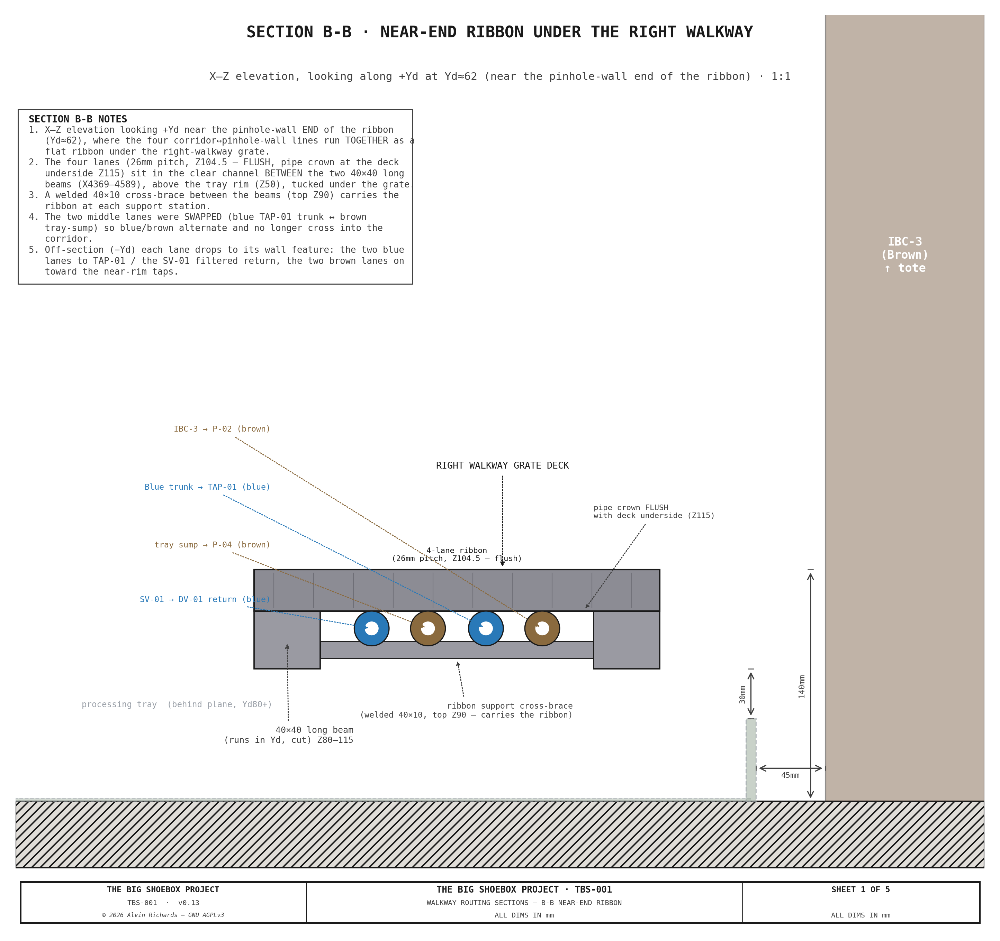
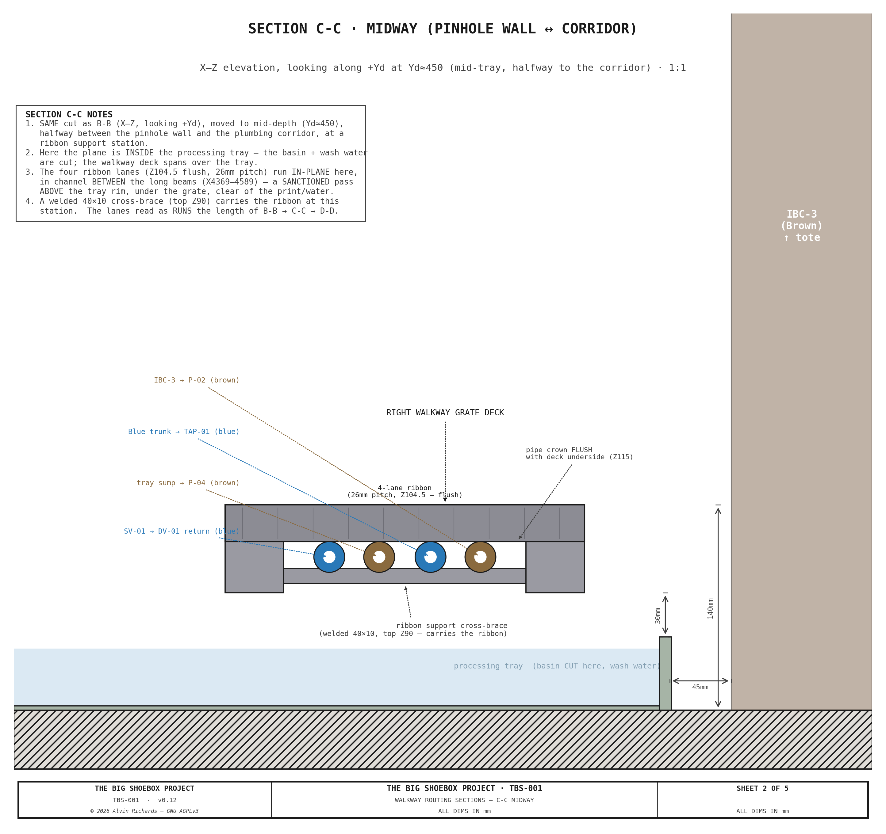
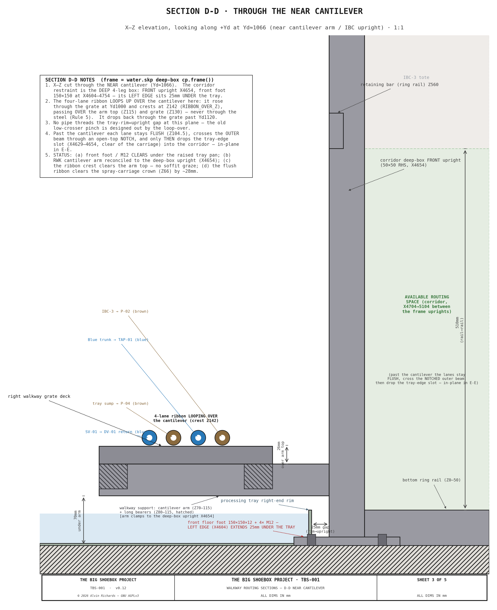
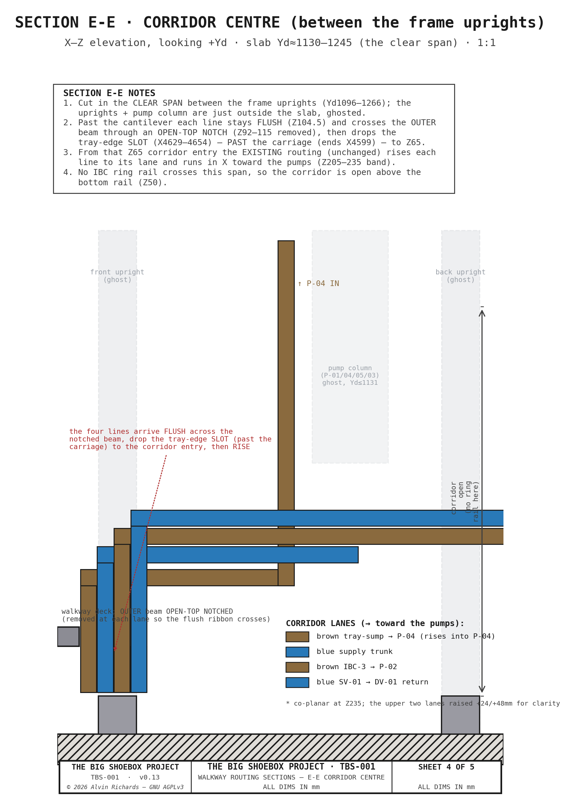
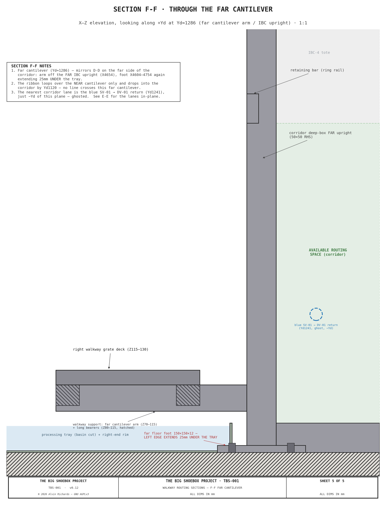
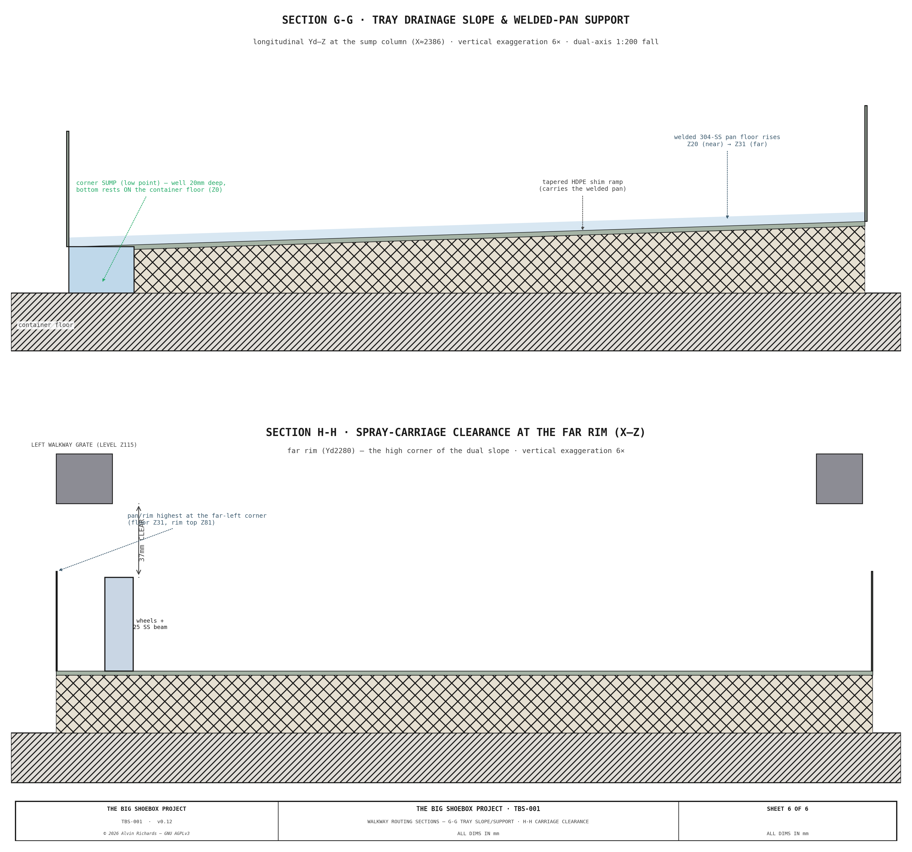

Right Walkway — Pipe Routing Sections¶
The corridor plumbing threads a tight zone at the IBC end of the container, where the right walkway, the processing tray, the IBC restraint frame and the pump column all compete for space. The four lines that connect the plumbing corridor to the pinhole‑wall panel — IBC‑3 → P‑02, the filtered return SV‑01 → DV‑01, the tray‑sump → P‑04 pickup, and the Blue supply trunk → TAP‑01 — run together as a flat ribbon in the dead space under the right‑walkway grate, in the clear channel between the two walkway long beams. This document is a set of cross‑sections that walk from the pinhole wall across to the plumbing corridor, so the clear routing envelope the ribbon actually has at each depth is legible — and so the points where it shares space with structure are visible.
These sections are the companion to the Plumbing report; the pipe
positions are read off the 3D water model (water.skp) and drawn 1:1.
How to read these¶
The five sections B‑B through F‑F are longitudinal along the walkway (down the length of the container), cut at increasing depth — so together they scan from the pinhole wall across to the plumbing corridor. (Sections G‑G / H‑H below add the tray‑slope views)
| Section | Cut (Yd) | What it shows |
|---|---|---|
| B‑B | ≈ 62 (near end) | the four ribbon lanes in the channel between the long beams, near their pinhole‑wall end |
| C‑C | ≈ 450 (mid‑tray) | the ribbon passing above the tray, under the grate — a sanctioned pass over the exclusion zone |
| D‑D | ≈ 1066 (near cantilever) | the ribbon looping over the cantilever, and the foot under the tray |
| E‑E | ≈ 1130–1245 (corridor center) | the lines crossing the notched beam flush, dropping the tray‑edge slot, and rising into the four corridor lanes |
| F‑F | ≈ 1286 (far cantilever) | the far cantilever, mirroring D‑D (no line crosses it) |
Section B‑B — near end of the ribbon¶

Cut near the pinhole‑wall end of the ribbon (Yd ≈ 62). The four lanes run side‑by‑side on a 26 mm pitch at Z104.5 — flush, their crowns at the grate underside, in the clear channel between the two 40 × 40 long beams, sitting above the tray rim. A welded 40 × 10 cross‑brace between the beams carries the ribbon at each support station. Off‑section each lane drops to its wall feature — the two blue lanes to TAP‑01 and the SV‑01 filtered return, the two brown lanes on toward the near‑rim taps.
Section C‑C — midway (pinhole wall ↔ corridor)¶

The same cut moved to mid‑tray depth, at a ribbon support station. The plane is inside the processing tray, in the channel between the long beams. This is a sanctioned pass over the tray exclusion zone: the ribbon runs above the tray rim, under the grate, clear of the print and wash water, and never sits in the basin. The welded cross‑brace carries it at this position.
Section D‑D — through the near cantilever¶

Cut through the near cantilever. The corridor restraint is the deep 4‑leg box: its front upright and its front foot (150 × 150) — extending 25 mm under the tray. The walkway support (cantilever arm plus the hatched long bearers) carries the deck.
The ribbon loops up over the cantilever here. It rises through the grate, crests, then passing over the arm top and the grate, clearing the arm by ≈ 16 mm — and drops back to the flush ribbon height, so it never passes through the cantilever steel and never dips toward the tray. No line threads the tray‑rim↔upright gap at this plane. Past the cantilever each lane stays flush, crosses the outer beam through an open‑top notch, and only then drops the tray‑edge slot into the corridor to run into the pumps — they appear in‑plane in E‑E.
Section E‑E — corridor center¶

A thick‑slab section through the clear span between the frame uprights. Past the cantilever each line stays flush and crosses the outer long beam through an open‑top notch (the beam's top web is slotted at each lane so the pipe passes through without dipping). It then drops the tray‑edge slot — which sits past the spray‑carriage travel — to the corridor entry, to the ** corridor routing** rises each line to its lane height and runs in X toward the pump column: the brown tray‑sump → P‑04 and the other three ribbon lines — brown IBC‑3 → P‑02, blue Blue trunk → TAP‑01, and blue SV‑01 → DV‑01 return. No IBC ring rail crosses this span, so the corridor is open above the bottom rail.
Section F‑F — through the far cantilever¶

The mirror of D‑D on the far side of the corridor: the far cantilever arm and far foot (again extending under the tray). The ribbon loops over the near cantilever only and has dropped into the corridor, so no line crosses this far cantilever; the nearest line is the blue SV‑01 → DV‑01 return lane.
Sections G‑G / H‑H — tray slope, support & spray‑carriage clearance¶

These two sections make the tray's raised, sloped floor explicit (6× vertical exaggeration, since the fall is ~1:200). G‑G is a longitudinal cut at the sump column: the welded 304‑SS pan sits on a tapered HDPE shim ramp with its low corner raised so the 20 mm sump‑well bottom rests on the container floor, rising at the far rim. H‑H is an X–Z cut at the far rim (the high corner of the dual slope) showing the level walkway grates over the sloped pan and the shrunk spray‑carriage (Ø32 wheels + 40×25 SS beam) with ~30 mm clearance under the left grate.
Interference & clearance findings¶
Drawing these sections at 1:1 against water.skp confirms the ribbon's key clearances and the
two remaining structural items the plan views do not reveal:
- Ribbon flush under the grate, clear of the carriage — the four lanes ride flush (pipe crown at the grate underside) and 54 mm above the tray rim. Flush is what keeps the whole over‑tray run above the spray‑carriage crown by ≈ 28 mm — the carriage sweeps the full tray width and length, so the ribbon must clear it everywhere it is over the tray. The welded cross‑braces keep the lanes off the tray.
- Loop‑over clears the cantilever — the crest clears the cantilever‑arm top by ≈ 16 mm and passes just over the grate; the loop keeps the lines out of the cantilever steel entirely (D‑D). Past the cantilever each line returns to the flush — never dipping.
- Notched‑beam corridor entry — a flush pipe cannot pass under the outer long beam (the carriage crown to the beam soffit, leaves only 14 mm, less than the 21 mm pipe), so the beam's top web is slotted with an open‑top notch at each lane, leaving the bottom web intact. Each line crosses the notch flush, then drops the tray‑edge slot — which sits past the carriage travel — into the corridor, where the existing routing rises it to the pumps. No pinch remains at the tray‑rim↔upright gap.
- Front foot + M12 anchor under the tray basin — the tray‑datum correction raises the welded pan onto the shim ramp (floor bottom, at the corridor foot stations), so the 12 mm front foot clears ~11 mm under the pan (see G‑G).
- Cantilever‑arm reference — the RWK cantilever arm clamps to the deep‑box front upright, so overview / ibc‑stack / walkway all reference the same upright.
See Also¶
- Plumbing — the corridor plumbing panel and the four-line topology these sections cut through.
- Walkway Report §4 — the right-walkway cantilever rectangle the sections pass over.
- Processing Tray & Spray Bar — the tray slope + spray-carriage clearance (G‑G / H‑H).
- Water System Report — the Blue / Brown / Black circuit topology of the four ribbon lines.